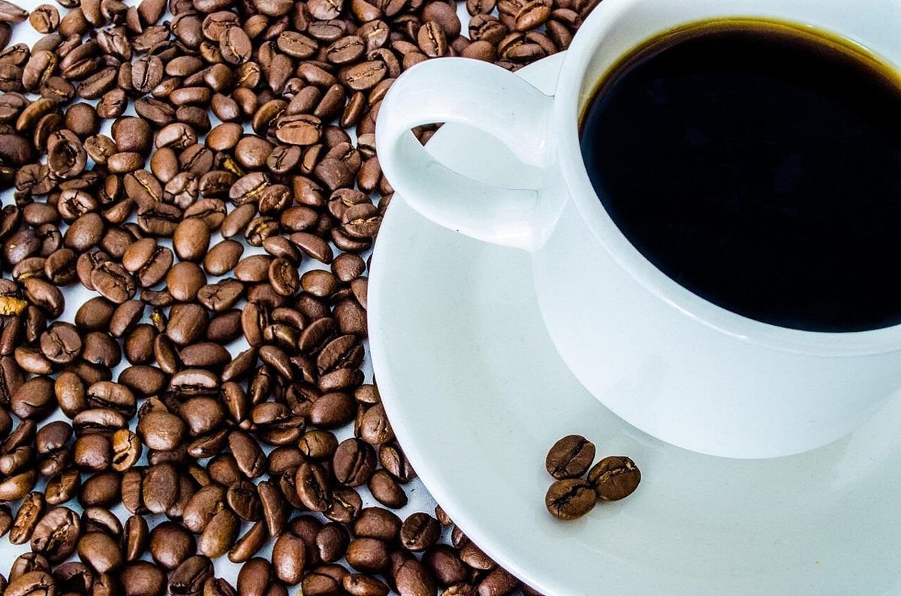
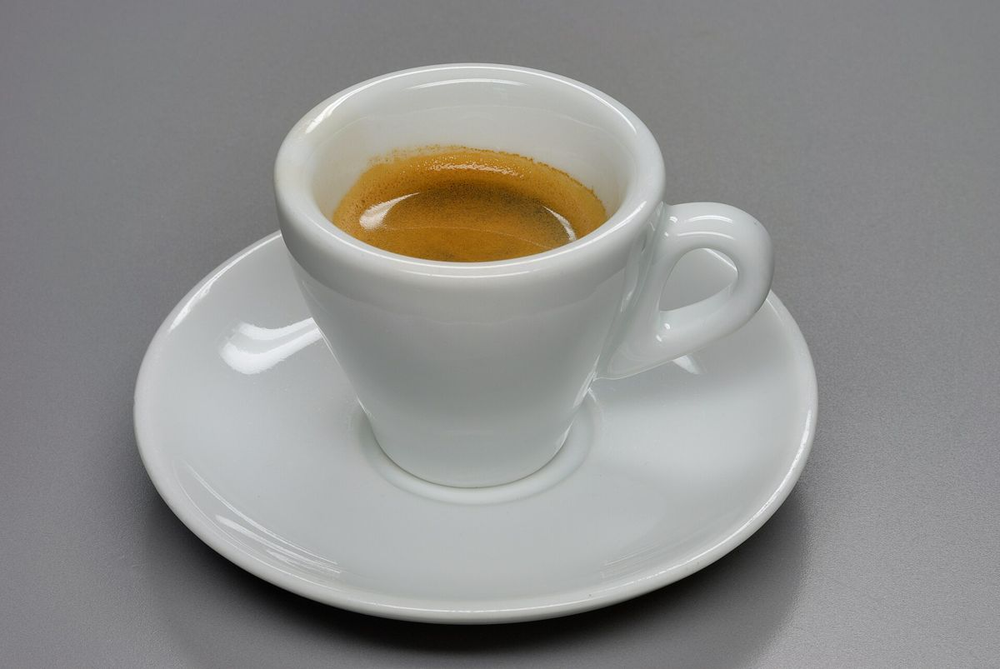

制作側の連想
キッチンタイマーの部位を、配置図にしてみる
このサイトは、ダイヤルを回して使うキッチンタイマーを図にしたつもりで作りました。六つの部位に番号をふり、上の図と並べています。制作側の連想で、お店の理念・由来とは無関係です。実際の製品の仕様を示すものでもありません。
凡例
六つの部位
- 1つまみ回して時間を合わせる、中心の大きな部品。
- 2目盛り環つまみのまわりに刻んだ、時間を読むための目盛り。
- 3ベル時間が来たことを音で知らせる、上部の部品。
- 4本体ケース中の仕組みを包む、外側の丸みのある箱。
- 5指標目盛りのどこを指すかを示す、小さな三角の印。
- 6脚底に付いた、置いたときに安定させる小さな足。
ギャラリー(イメージ)
パンとコーヒーの写真




写真はパンとコーヒーのイメージです。お店のものではなく、お店で提供している商品を示すものでもありません。


白い背景のパンと、カップのコーヒーのイメージです。
ご案内
お店のこと(確認できたものだけ)
| 所在地 | 〒479-0833 愛知県常滑市北条3丁目26 |
|---|---|
| 電話 | 準備中 |
| 営業時間 | 準備中 |
| 定休日 | 準備中 |
| ご予約 | 準備中 |
| 駐車場 | 準備中 |
| SNS | Instagram @yamaheihanare |